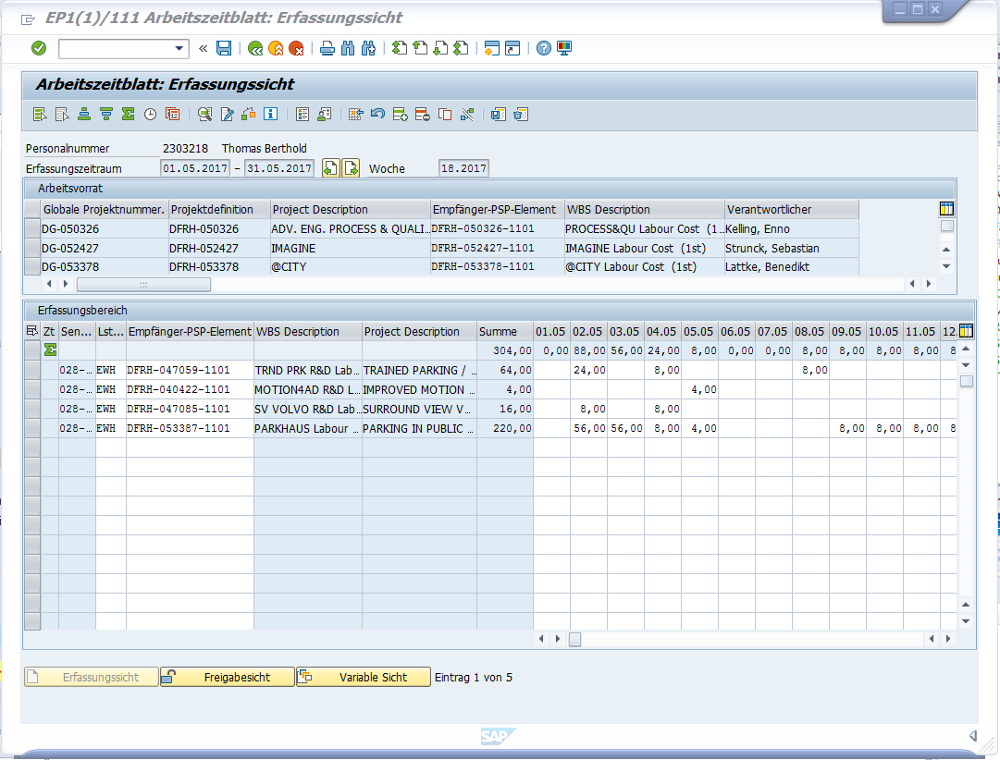

CW47: Mo 25.11.2019 08:46-------------------------------------------------------------------------------------------------------------------
Abrechnung Oktober vergessen. Damit 22 Arbeitstage Oktober, 21 Arbeitstage November, 11 Urlaubstage => 32 Tage * 8 = 256 h

Abrechnung September 2019 Nr Monat Arbeitstage Urlaub Krank netto Stunden Liste Christof bereits gebuchte Stunden Diff Rausnehmen Bemerkung 1 Jan 22 22 176 176 0 0 2 Feb 20 20 160 80 80 80 0 mit Christof klären, hier müssten 80 stunden für PeterLauer gebucht sein 3 März 21 1 12 8 64 72 -8 -8 4 April 20 4 16 128 0 128 128 5 mai 21 21 168 0 168 168 6 Juni 18 5 13 104 256 -152 -152 7 Juli 23 2 21 168 0 168 168 8 August 22 2 20 160 176 -16 -16 9 September 21 2 19 152 0 152 152 Summe 440
CW16: Mi 24.04.2019 10:20-------------------------------------------------------------------------------------------------------------------
Hallo
aus kaufmännischen Gründen soll nicht mehr das C-Holistic Urban Drving (066834) sondern das Holistic-Urban Driving (67415) Projekt bebucht werden.
Das Projekt ETOOLS und Prozessentwicklung 2018 (05989) sollte nicht bebucht werden. (sollte auch geschlossen sein)
Das Projekt LH_AD:DEV_VEFICLE (039727) sollte auch nicht bebucht werden
Bitte dies für April und Folgemonate berücksichtigen
Mo 27.08.2018 13:24
abwechselnde Integrationswochen für AP und SDC

Do 09.08.2018 12:00
Projekt @City Projektnummer:
Go to DG-059765
Di 31.07.2018 09:48
Alle Stunden auf Valet Parking G10 Min und 03727 geschrieben, Ich weiß

Mi 18.07.2018 07:16
Hallo,
bitte ab sofort alle Arbeiten, die im Zusammenhang mit Parken stehen nur noch auf folgendes Projekt buchen:
VALET PARKING G10 MIN
DFRH-059675
Bitte keine Stunden mehr auf TRAINED PARKING G10 (DFRH-047059) buchen!
Bitte die Mail auch an Personen weiterleiten, die am Parken arbeiten, aber nicht Empfänger dieser Mail sind.
Danke!
Benedikt
Do 28.06.2018 08:00

Mo 18.06.2018 07:31
Hallo,
in den letzten beiden Monaten sind sehr wenige Stunden auf die beiden Parken-Projekte gebucht worden, auf die CC-Projekte dagegen mehr als erwartet. Ich befürchte, dass hier ein Missverständnis vorlag. Bitte weiterhin alle Arbeiten, die im Zusammenhang mit Parken stehen, auf folgende Projekte buchen:
VALET PARKING G10 MIN
DFRH-059675
TRAINED PARKING G10
DFRH-047059
Das gilt auch für Arbeiten, die im Rahmen des PH AD für das Parken geleistet wurden. Bei Unklarheiten bitte mich fragen oder Stundenaufteilung mit gesundem Menschenverstand abschätzen. Bitte die Mail auch an Personen weiterleiten, die am Parken arbeiten, aber nicht Empfänger dieser Mail sind.
Danke!
Benedikt
Fr 08.06.2018 13:08
Hi Thomas,
zukünftig bitte auf die DFRH-039727-1101 buchen.
Gruß
Fabian
Di 29.05.2018 07:37

Di 19.12.2017 12:43

Mi 29.11.2017 09:36

Mi 18.10.2017 10:53
Benedikt:
bitte ab sofort bis Ende des Jahres alle allgemeinen Parkthemen auf folgendes Projekt buchen:
TRAINED PARKING G10
DFRH-047059
DG-047059
Bitte NICHT mehr auf PARKING IN PUBLIC GARAGE (DFRH-053387) buchen.
Fr 22.09.2017 14:39
PW: Barcelona2017
Mo 31.07.2017 08:09

Di 30.05.2017 09:28
Login mit Darmstadt2017, Stunden im Mai enthalten auch die Stunden vom April 2. und 3.5
